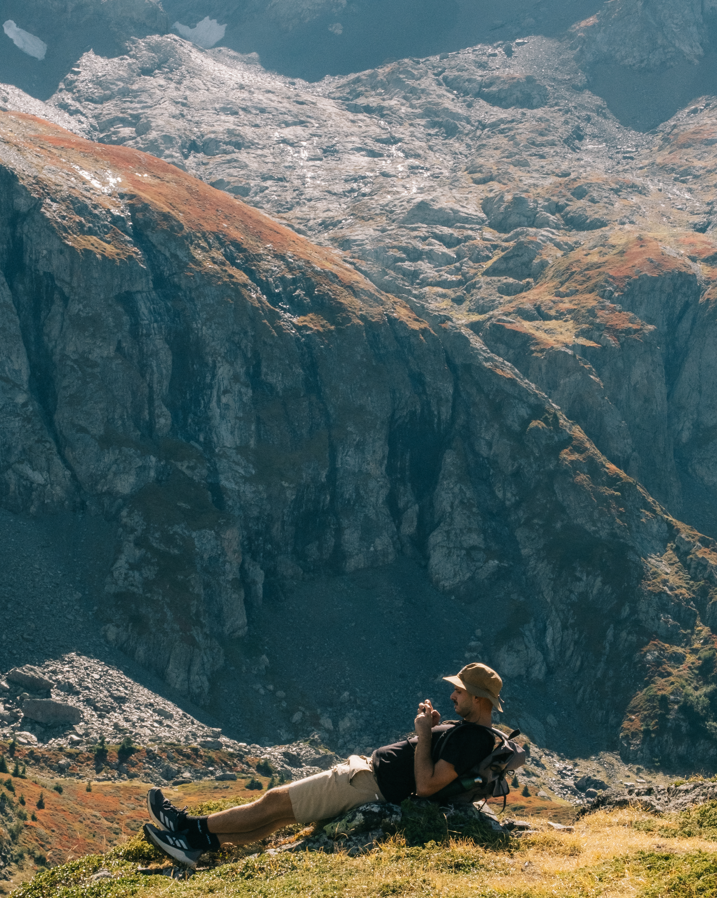

Anastasios Fotiadis

I am a mathematician working in differential geometry. My research interests include Poisson geometry, singular foliations, higher structures and interactions with infinite-dimensional geometry.
Since October 2024, I have been a PhD student at Université Claude Bernard Lyon 1. My advisor is Leonid Ryvkin.
Short Bio
2024–2027: PhD student at Université Claude Bernard Lyon 1. Thesis: Infinite-dimensional Lie algebras in differential geometry and mathematical physics.
2023–2024: M2 in Mathematical Physics, Math4Phys, at Université de Bourgogne. Thesis: Non-commutative Poisson-vertex and Courant-Dorfman algebras, supervised by Maxime Fairon.
2021–2023: M.Sc. in Pure Mathematics at Aristotle University of Thessaloniki. Thesis: Curvature and Torsion in Graded Geometry, supervised by Panagiotis Batakidis.
2015–2021: B.Sc. in Mathematics at Aristotle University of Thessaloniki.
Contact
Email: familyname @ math dot univ-lyon1 dot fr